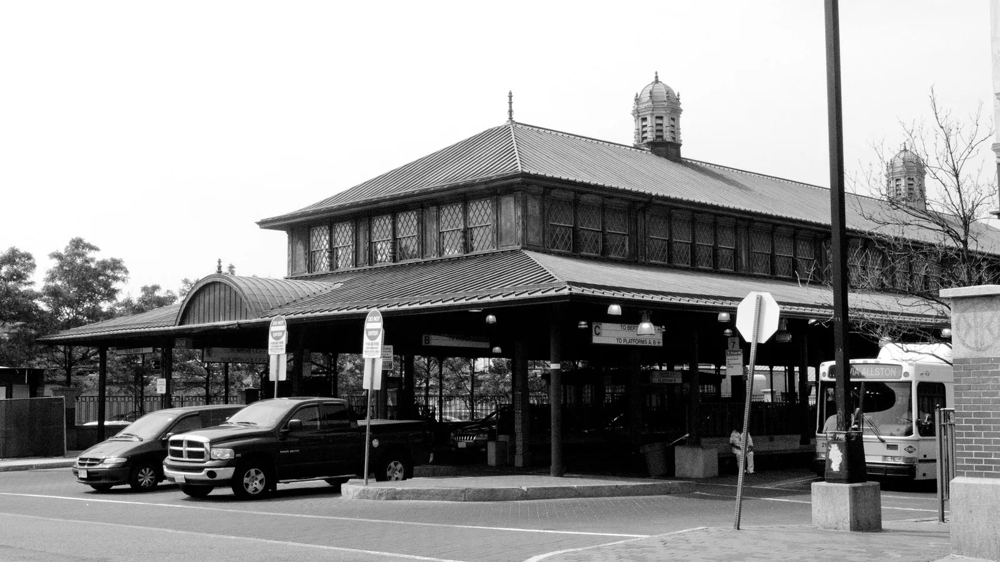
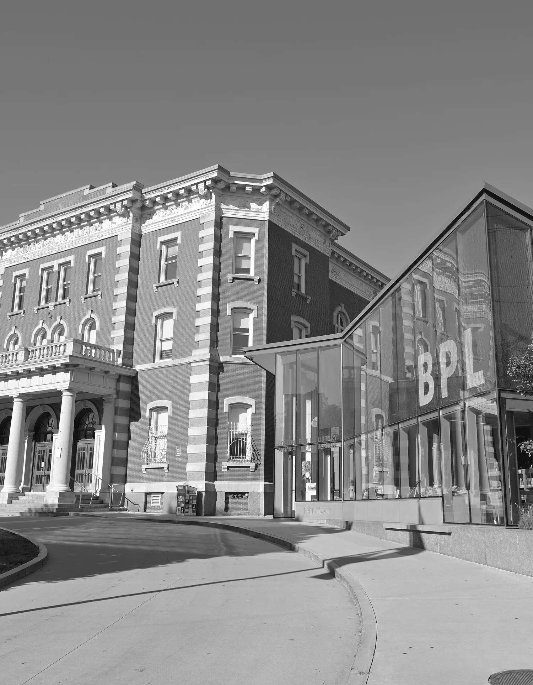
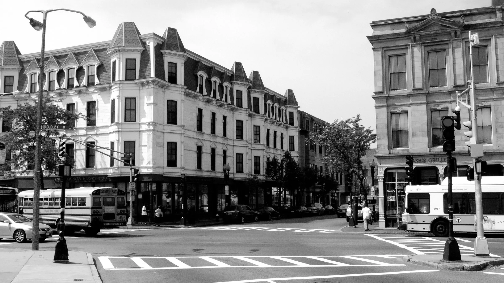
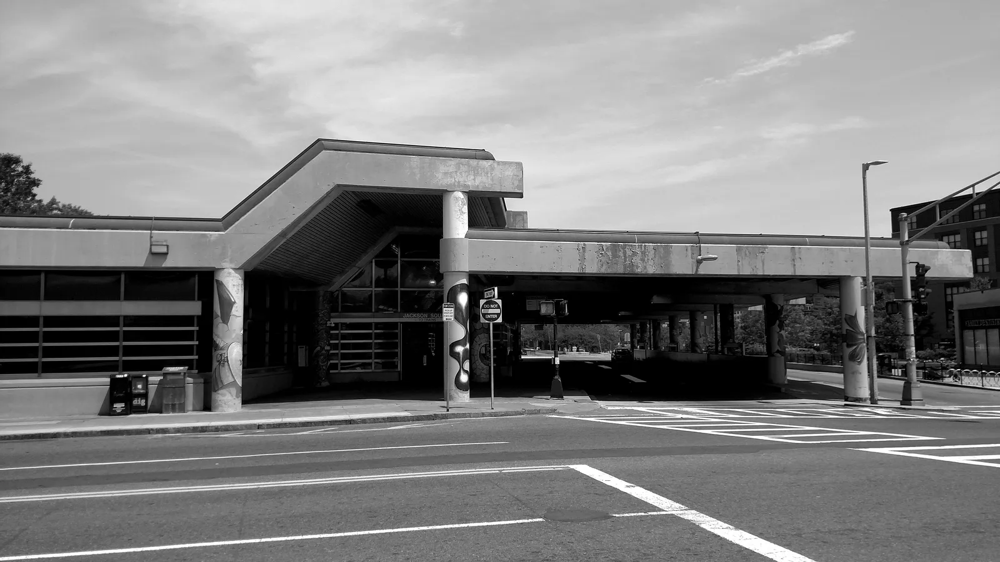
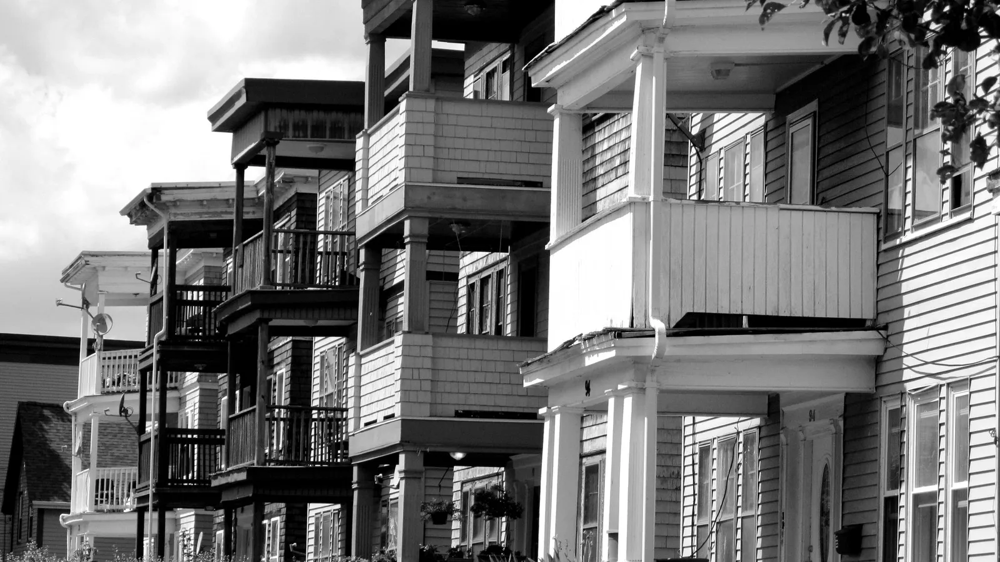
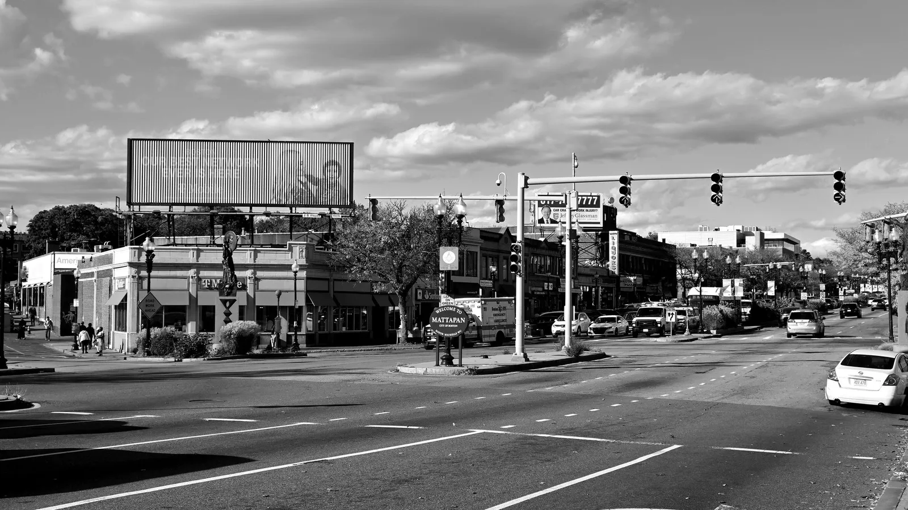
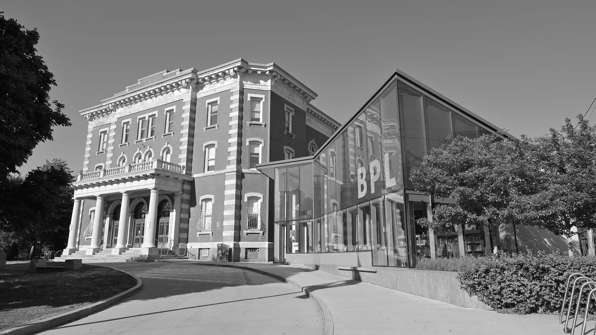
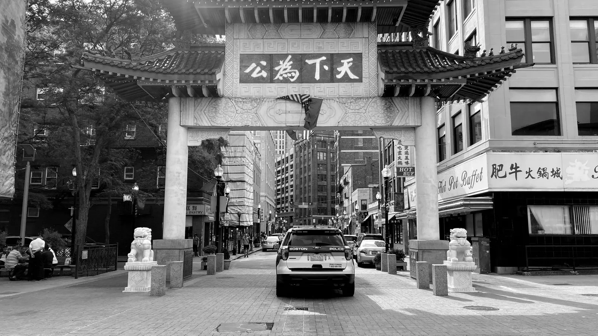
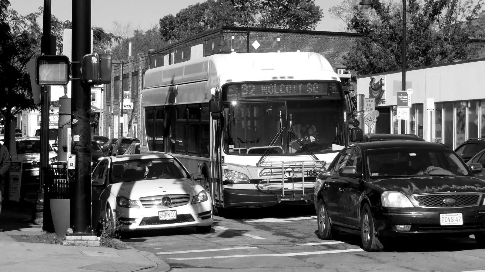
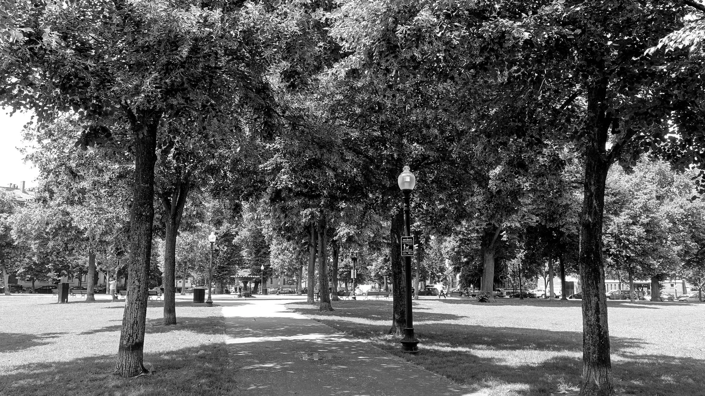

01 · Roxbury's center
Nubian Square
A bus hub and a place to gather, at the heart of Roxbury.
Community organizingLegislative relationshipsUrban planning
Giovanny Valencia organizes residents and works with legislators, so what a neighborhood needs makes it into the plans and the laws that shape it.
01 — The work
The laws that shape a neighborhood are written on Beacon Hill. Giovanny organizes the people who live with those laws, and brings them into the room with the legislators who write them.



02 — The city
The State House writes rules for every neighborhood at once. Most residents never see the room where it happens.
03 — The district
Knowing them and their staff, and showing up with a clear ask, is how a neighborhood gets heard.
04 — The neighborhood
Residents, businesses and nonprofits, organized around what they agree on.
05 — The block
Knocking on doors and talking with neighbors. Every campaign begins here.
06 — The plan
Door to door, block by block: residents who know what they want.
Tenants, small businesses, churches and nonprofits behind one ask.
Meetings and listening sessions, in the languages people speak.
Zoning, land use and housing, read for what they mean on the ground.
Residents ready to speak at City Hall and the State House.
Working with legislators and their staff on the bills that shape neighborhoods.
Massachusetts State House · Charles Bulfinch, 1798 · dome gilded 1874
Simplified drawing · not to scale
07 — Neighborhoods
01 / 08

A bus hub and a place to gather, at the heart of Roxbury.
Historic hills, triple-deckers and the churches of John Eliot Square.

Where Jamaica Plain meets Roxbury, rebuilding around the station.

Boston's largest neighborhood, block after block of three-family homes.

The trolley, Blue Hill Avenue and a strong Haitian community.

Hyde Square, the Latin Quarter and rents that keep climbing.

Dense, close to downtown and under steady development pressure.

Quiet streets and a busy square at the city's southern edge.
08 — Practice
One-on-one conversations with residents about what they need.
Where one ask is agreed, and the coalition behind it is built.
Where the ask meets the people who can act on it, and their staff.
Where residents testify, and a bill becomes the law they live with.

09 — Contact
Your email app should be open with the message ready to send.